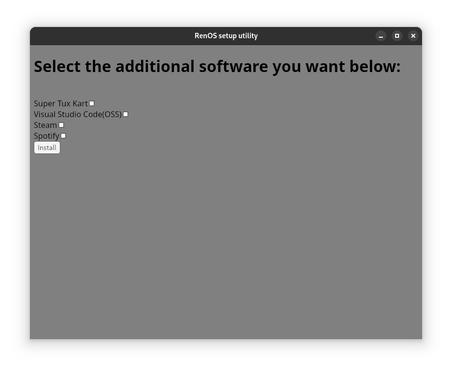

What is RenOS?
RenOS is a Linux distribution based on Arch Linux that favors simplicity over complexity. RenOS uses a desktop enviroment called GNOME that makes computing simple again.
Why base RenOS on Arch Linux?
Arch Linux (and by extension RenOS) is a rolling release distribution which means that updates to vital parts of the operating system such as GNOME are available to users much quicker compared to something like Debian.
Some software I need is not installed by default on RenOS, how do I download it?
RenOS comes with some abolutely needed software by default. When you start RenOS for the first time, a
window will pop up that will look something like this:

This will allow you to install extra software that's not included by default. If something that you want to
install is not in the setup utility, then feel free to request its addition in the RenOS github repository.
If your application is not included in the setup utility, you can install it using GNOME Software.
If the application is not bundled as a flatpak (which is the packaging format that's setup on RenOS by
default)
then it might be found in the Arch Linux package repository.
Such packages can be installed via the pacman package manager, a guide on how to use pacman is on the Arch Linux Website
Installation guide
Partitioning your disks
When you first boot from the flash drive an installer window pops up that looks something
like this:
Press "Yes" if you haven't setup your partitions before.
When you press "Yes" a window will soon pop up that looks something like this:

This is the partition editor GPARTED. It allows you to make
partitions(essentially parts of your disks) that are necessary for RenOS to run.
In the top right of the GPARTED window there's a dropdown selection that allows you pick the disk that you
want to partition. It'll look something like this:
There are multiple types of /dev partitions, /dev/nvme0n1 is an nvme drive, while /dev/sda is the usb that
the live installation of RenOS is booted from.
This can vary based on hardware, but the general rule of thumb is to identify the disks based on size.
Select the disk that you want to install RenOS on. Create a new partition by clicking the little document
icon with
a blue plus on it.
Okay, now we need to create a few partitions. We start by creating the partition that the operating system
is going to live on.
This will probably be the biggest partition on your disk. It should be formatted with the file system ext4. The partition create dialog(when you're done with
the partitioning) should look something like this:
Let's now create the swap partition. Swap is basically a partition that gets used when your RAM is full to
prevent the system from crashing. This partition should be about eight gigabytes.
Final partition to create is the boot partition. Here's where all the files that the computer needs to be
able to start any operating system lives.
It should be about one gigabyte in size.
Now press the green checkmark to apply your changes.
Now that the partitions have been created, return back to the installer window and select your partitions.
Grab a cup of tea(or other drink) and wait while the operating system installs.
Picking region-specific preferences

Now pick your timezone that's going to be used for the installed operating system.
After that, pick your locale. This can be a bit confusing. The locales are described in this article. Some example locales are:
en_US.UTF-8 UTF-8
en_GB.UTF-8 UTF-8
sv_SE.UTF-8 UTF-8
UTF-8 is the most common type of locale, ISO locales are generally not used anymore.
Creating your user account and setting the hostname
Then it's time to pick the name that your computer should use when talking to other computers(such as recieving files via bluetooth, etc.)
Choose a name for your user account. This name can't have any spaces in it, any numbers nor have any capital letters.
Pick a strong and secure password for your user.
Pick a password for the administrator account of the machine. This can be the same as your user password.
Installing the graphics card drivers
Pick the brand of graphics card that you use, simple as that.

Play some supertuxkart on your phone and come back in five minutes...
Now you're done! Reboot the system and enjoy your new computing experience!
Restoring RenOS from a broken state
If something's gone wrong with your RenOS installation, then it might be wise to use this feature. What RenOS restore MAY fix:- Your computer UEFI/BIOS tells you that there are no boot devices available (RenOS doesn't start)
- An update has not been successfully completed and some essential package is corrupt
- You've uninstalled an important part of your system such as GNOME